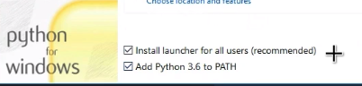
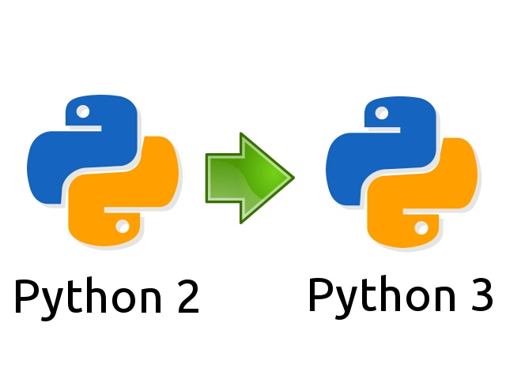

This course will walk you through the basic concepts of Programming using the Python programming language.
Programming is simply the act of entering instructions for the computer to perform. These instructions might crunch some numbers, modify text, look up information in files, or communicate with other computers over the Internet.
A program is like a:
- Cooking recipe
- Ikea assembly manual
But for the computer!
All programs, written in any language uses the same basic building blocks
Her are a few of the most common:
- "Do this; Then do that"
- "If this condition is true, perform this action; otherwise, do that action"
- "Do this action that number of times"
- "Keep doing that until this condition is true"
For most people, their computer is just an appliance instead of a tool. But by learning how to program, you'll gain access to one of the most powerful tools of the modern world, and you'll have fun along the way. Programming isn't brain surgery—it's fine for amateurs to experiment and make mistakes.
Python
Python is a clear and powerful object-oriented programming language, comparable to Perl, Ruby, Scheme, or Java.
Developed by Guido van Rossum
Windows
- Go to https://www.python.org/downloads/
- Download the latest version of Python (as of this course being written: Python 3.7.2)
- Run the installer
- enable PATH
 - click [Install now]
Test that Python is properly installed by running
python --version
in a CMD/Powershell shell.
In case of errors reference the - Using Python on Windows page: link
Linux
Ubuntu
sudo apt-get update
sudo apt-get install python3.7
python3 --version
Mac
On macOS, the best way to install Python 3 is to use Homebrew. Not familiar with homebrew? link
brew install python3
There are several tools installed with the Python interpeter. Here are some of them:
python interpreter | The python interpreter. The executable that can be called directly from the commandline/terminal to start a new interactive python session (REPL) or to run python modules/files/packages |
pip | The Python package manager. The official Python package manager. Lets the user download and manage third-party packages hosted on the Python package index (PyPI) |
IDLE | IDLE is Python's Integrated Development and Learning Environment. Its a Python IDE for and by Python |
pydoc | The pydoc module automatically generates documentation from Python modules. |
Python can be used and developed with using only a basic text editor and the python interpreter. But for larger and more complex projects there is a benefit to use porpouse built tools for Python development.
Objects are Python's abstraction for data. All data in a Python program is represented by objects or by relations between objects.
- Python is strongly typed and dynamically typed.
- Python is a general porpouse progragramming language. It is not the best choice for time critical or memory constrained tasks.
- Python is really a compiled programming language, but it acts as a interpred language.
- There exist different implementation of Python. The most common, and the one we will use in this course is CPython.
- Python comes with "Batteries included", meaning Python comes with a feature rich standard libary.
Python has two main versions. Python 2 and Python 3. Python 3 is the newest, but it has struggeled with adoption for some time. Python 3 has as of 2018 taken the mantle as the main version from Python 2.
Practicly this means that new Python packages and application will in most cases be written in Python 3.
Python 2 end of life is january 1 2020.
